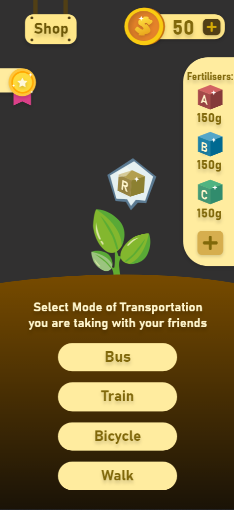
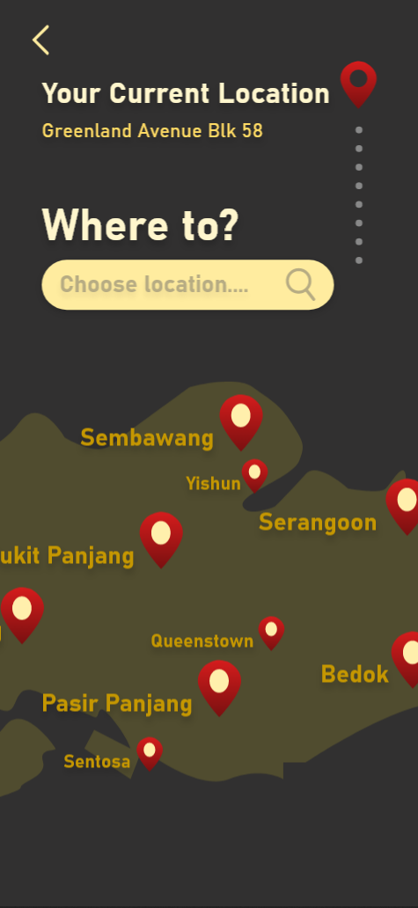
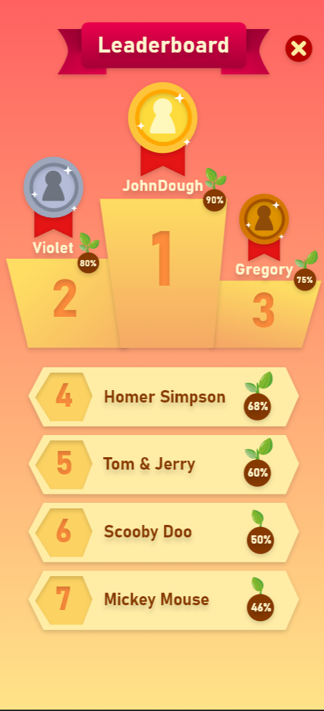
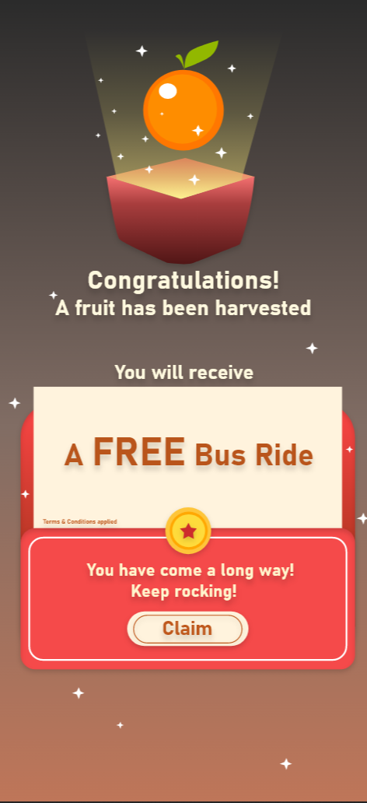
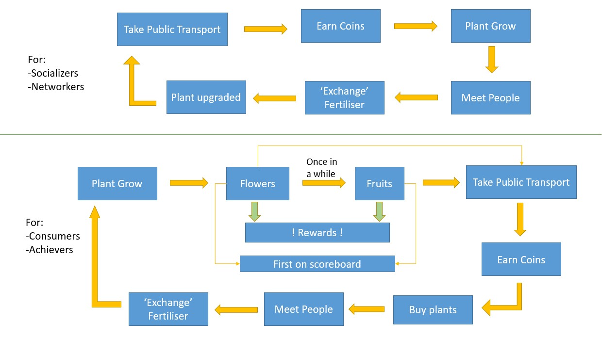

OVERVIEW
Background
Since encouraging commuters to take public transport will help to reduce carbon footprints, I felt that implementing the concept of growing a tree will be closely related to the theme of being environmentally friendly.
Hence, I designed a gamification system where users would be able to nurture a seed into a tree anytime they are using public transportation in an effort to encourage commuters to do so more frequently. Growing the seed into a tree with flowers and fruits is the aim of the game. Each time, when the flower has bloomed, rewards will be awarded.
This app will cater for the top four player types. The Achievers and Socializers will be the two willing player types, while the Consumers and Networkers will be the two unwilling player types.
Hence, I designed a gamification system where users would be able to nurture a seed into a tree anytime they are using public transportation in an effort to encourage commuters to do so more frequently. Growing the seed into a tree with flowers and fruits is the aim of the game. Each time, when the flower has bloomed, rewards will be awarded.
This app will cater for the top four player types. The Achievers and Socializers will be the two willing player types, while the Consumers and Networkers will be the two unwilling player types.
Project Timeline

Name of App:
Moving Forest
Product preview
Leaderboard page
Allow user to select where he wants to go
Home page, where the tree grows
Reward page
GAMIFICATION CONCEPTS
Reward Loops Diagram
To further breakdown how the gamification system works in my app, the diagram below will show how each feature will cater to the different player types.
